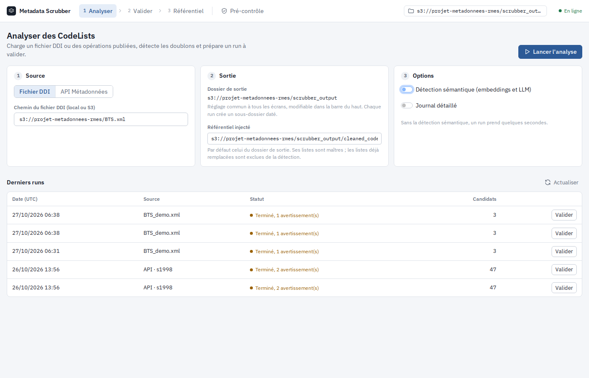
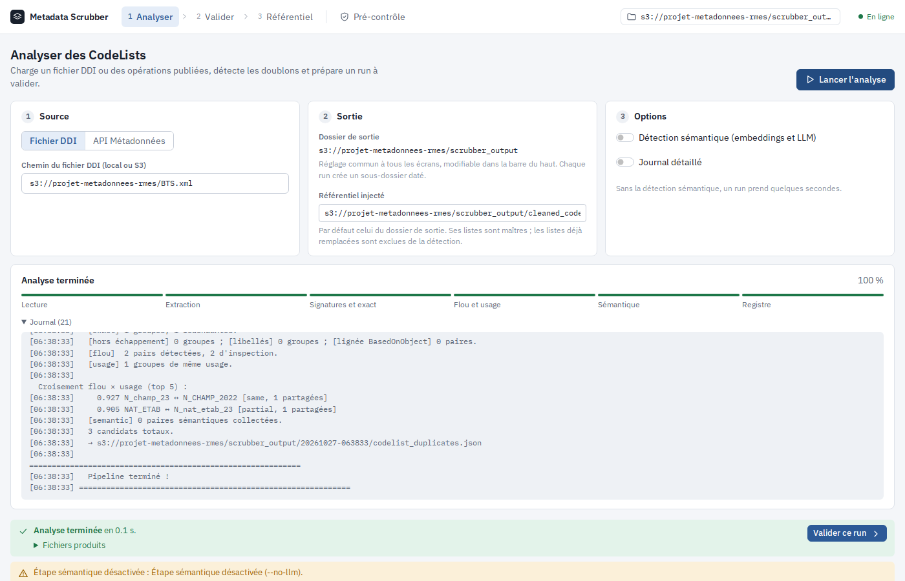
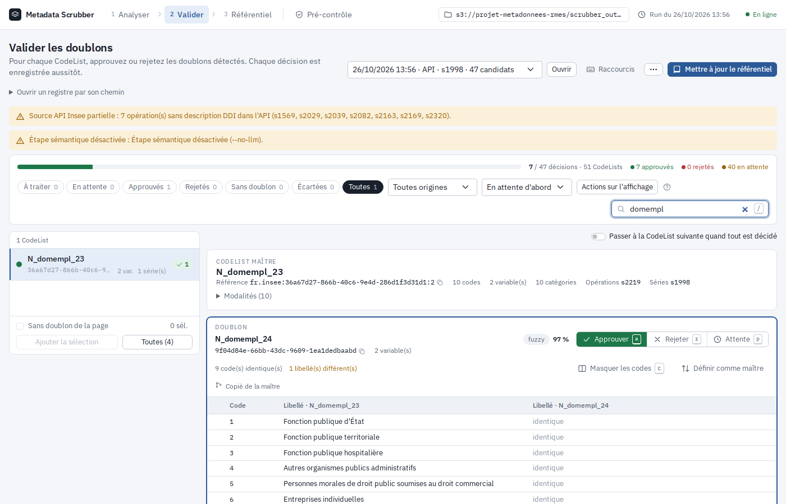
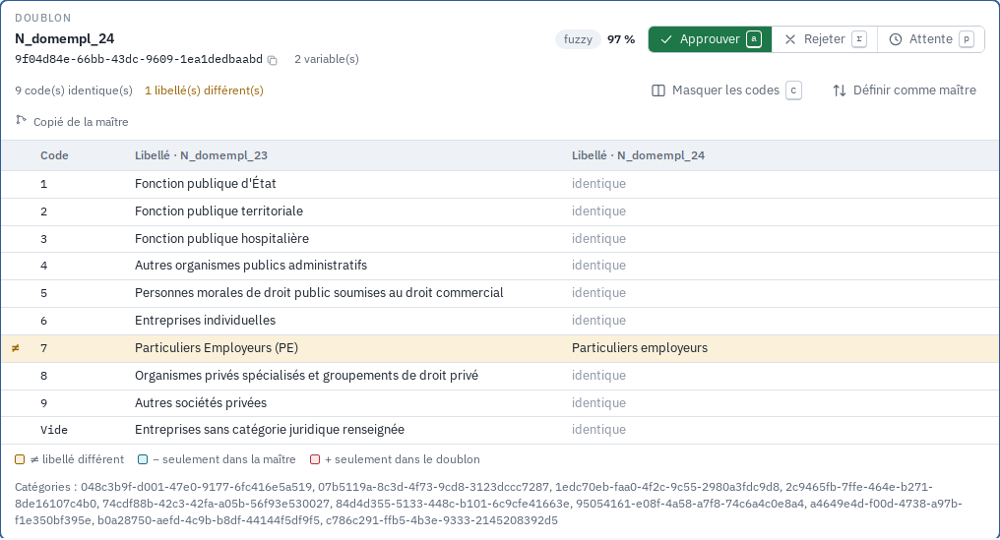
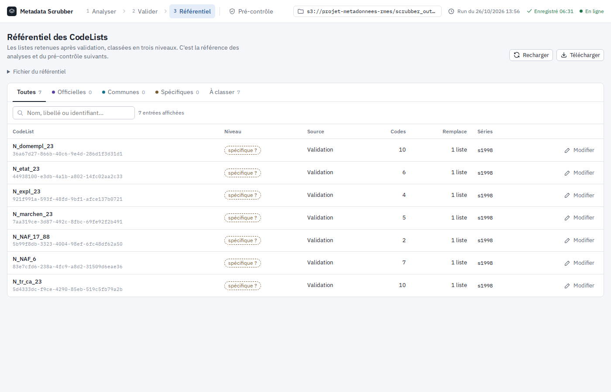

Guide d’Utilisation — Metadata Scrubber
1 Introduction
Le Metadata Scrubber est un outil qui identifie les listes de codes (CodeList) redondantes au sein d’un fichier de métadonnées au format DDI (Data Documentation Initiative). Il propose deux modes d’utilisation complémentaires :
- Exécution automatique — analyse le fichier XML DDI et génère un registre de paires de CodeLists détectées comme potentiellement redondantes.
- Interface de validation interactive — permet d’examiner chaque paire, prendre des décisions (consolider ou rejeter), et produire en sortie un registre épuré ne conservant qu’une CodeList maîtresse par groupe de redondances.
Ce document s’adresse à l’expert métier qui utilise l’interface web pour examiner les résultats et valider les rapprochements. La logique algorithmique du pipeline (entonnoir exact → flou → sémantique) est décrite en détail dans la note méthodologique (§ 8).
2 Prérequis
Le serveur du Metadata Scrubber doit être en cours d’exécution. Sur SSP Cloud / Onyxia, il est déployé sous le hostname metadata-scrubber.lab.sspcloud.fr avec un accès protégé par Basic Auth.
Au premier chargement, un formulaire de navigateur demande :
- Identifiant — votre nom d’utilisateur ou identifiant SSP Cloud
- Mot de passe — le mot de passe partagé fourni dans la configuration du projet
L’interface est également accessible en local après avoir lancé le serveur :
uv run scrubber-web, puis ouvrezhttp://localhost:8000.
3 Lancer le pipeline
L’interface suit les étapes du travail, dans la barre du haut : 1 Analyser, 2 Valider, 3 Référentiel, et à part Pré-contrôle. La même barre rappelle le dossier de sortie (cliquer dessus pour le changer : réglage commun à tous les écrans, mémorisé par le navigateur), le run ouvert, l’état d’enregistrement des décisions et l’état du serveur. L’interface suit le thème clair ou sombre du système.
La première étape (1 Analyser) sert à configurer et lancer l’exécution automatique du dédoublonnage, sur un fichier DDI ou directement sur des opérations publiées dans l’API Métadonnées de l’Insee.
3.1 Configurer le pipeline
| Champ | Rôle |
|---|---|
| Source | Fichier DDI : URL S3 ou chemin local. API Métadonnées : une ou plusieurs séries, choisies dans une liste « identifiant – nom » (tapez s1998 ou tous salariés), puis, si besoin, certaines de leurs opérations (sans choix, toute la série est chargée ; l’écran signale une série sans opération ou à opération unique), ou toute la base. Les objets téléchargés sont mis en cache dans api_cache/ sous le dossier de sortie : un nouveau run ne retélécharge que les nouvelles versions. |
| Sortie | Rappel du dossier de sortie (par défaut s3://projet-metadonnees-rmes/scrubber_output, modifiable dans la barre du haut). Chaque run crée son propre sous-dossier daté AAAAMMJJ-HHMMSS contenant codelist_duplicates.json, run_summary.json et pipeline.log. Le référentiel (cleaned_codelists.json) et decisions.json restent à la racine, partagés entre les runs. Référentiel injecté : par défaut celui du dossier de sortie ; ses listes sont prioritaires, les listes déjà remplacées sont exclues de la détection. |
| Options | Détection sémantique (embeddings et LLM) : décocher pour un run rapide. Journal détaillé : mode verbeux. |
Avec la source API, chaque CodeList connaît les opérations et séries qui l’utilisent (affichées à l’étape Valider) ; les opérations sans description DDI et les objets non diffusés par l’API (accès refusé) sont signalés en avertissement.

3.2 Exécuter le pipeline
Après avoir complété les champs, cliquez sur Lancer l’analyse (en haut à droite).
Un bandeau de suivi apparaît et avance en temps réel :
- Étape en cours et pourcentage global ;
- frise des étapes : lecture, extraction, signatures et exact, flou et usage, sémantique, registre (en vert les étapes terminées) ;
- Journal : la sortie détaillée du pipeline (horodatage, messages de chaque phase, résultats des comparaisons), ouvert pendant l’exécution.

Temps d’exécution estimé : quelques secondes pour un petit fichier (< 500 Ko), 1–3 minutes pour un fichier standard. La phase LLM (embeddings + juge) peut ajouter plusieurs minutes supplémentaires.
3.3 Résultat
En fin d’exécution, un bandeau vert affiche la durée, les fichiers produits (repliés) et les avertissements éventuels, avec un bouton Valider ce run qui ouvre directement le registre du run à l’étape Valider.
Le tableau Derniers runs, sous le formulaire, liste les runs du dossier de sortie (date, source, statut, nombre de candidats) avec un bouton Valider. Un run terminé avec avertissements a un statut ambre (détail en infobulle).
Les avertissements les plus courants n’empêchent pas de valider le run :
- Source API Insee partielle : certaines opérations de la série n’ont pas de description DDI publiée dans l’API (variables, listes de codes), souvent les plus anciennes. Elles sont ignorées et n’apportent aucune CodeList ; le message indique combien d’opérations ont bien été analysées.
- Détection floue partielle : les CodeLists de plus de 5 000 codes (par exemple les communes) ne sont pas comparées en détection floue, trop coûteuse ; le message les nomme. Elles restent comparées en détection exacte.
4 Examiner et valider les doublons
La deuxième étape (2 Valider) est au cœur du travail de l’expert. Il présente le registre des paires de CodeLists détectées comme potentiellement redondantes (liste des CodeLists à gauche, doublons de la CodeList sélectionnée à droite), avec des filtres, des actions par paire et des actions de masse.
4.1 Charger le registre
- Vérifiez le dossier de sortie dans la barre du haut.
- Choisissez le run dans la liste en haut de page (le plus récent est présélectionné) et cliquez sur Ouvrir.
Ouvrir un registre par son chemin permet encore de saisir le chemin d’un codelist_duplicates.json quelconque.
Le run ouvert, les filtres et la CodeList affichée sont conservés dans l’adresse de la page : un rechargement ou un lien partagé rouvre la même vue.
4.2 Vue d’ensemble
Un bandeau en haut de page résume l’avancement : une barre approuvés (vert) / rejetés (rouge) sur l’ensemble des doublons, le nombre de décisions prises, de CodeLists, d’approuvés, de rejetés et d’en attente. Juste dessous, les filtres (voir Filtres).
La page est ensuite découpée en deux colonnes :
- Colonne de gauche : la liste des CodeLists de référence du fichier examiné, avec leur nom, leur identifiant, le nombre de variables (et de séries, source API). Un rond indique l’état (ambre : doublons en attente, vert : tout est décidé, pointillé : sans doublon, bleu : dans le référentiel) et la pastille de droite le nombre de doublons en attente (le détail est en infobulle). La liste reste visible quand on fait défiler la page ; elle est paginée par 50.
- Colonne de droite : la CodeList maître sélectionnée (nom, référence DDI, niveau, provenance, modalités repliées), puis ses doublons.
4.2.1 Ajouter des CodeLists sans doublon au référentiel
Les CodeLists pour lesquelles aucun doublon n’a été détecté peuvent être ajoutées au référentiel sans passer par une décision. Elles portent une case à cocher dans la colonne de gauche (les CodeLists avec doublons n’en ont pas), et la barre en bas de colonne permet de les ajouter :
- Case à cocher sur chaque ligne, et Sans doublon de la page pour cocher toutes celles de la page affichée. La sélection est conservée quand on change de page ou de filtre.
- Ajouter la sélection ajoute les CodeLists cochées, après confirmation.
- Toutes (n) ajoute d’un coup toutes les CodeLists sans doublon du registre chargé, quels que soient les filtres actifs.
Les CodeLists déjà présentes dans le référentiel sont ignorées. Une fois ajoutée, une CodeList a un rond bleu et la mention référentiel.
4.2.2 Listes suspectes
Certaines listes ne devraient probablement pas être des listes de codes. Elles portent un triangle d’alerte, détaillé dans l’en-tête de la maître :
- renvoi : les codes renvoient ailleurs (« Voir dictionnaire des nomenclatures », « Code quartier du QVA ») ; la liste est alors comparée aux autres sur son nom, pas sur ses codes ;
- numérique : représentation numérique mise en liste (« 0 à 7 », « de 0 à N ») ;
- code unique : un seul code métier.
Le filtre origine Listes suspectes les regroupe. Ajouter une liste suspecte au référentiel demande une confirmation.
4.2.3 Écarter une CodeList sans doublon
Une CodeList sans doublon qu’on ne veut pas ajouter au référentiel (par exemple une liste des départements qui n’est pas la liste officielle) peut être écartée avec le bouton Écarter du panneau de droite. Son nom est alors barré, elle n’a plus de case à cocher et n’est pas prise par Toutes (n). Annuler l’écart la réintègre.
L’écart est enregistré aussitôt et repris aux runs suivants (voir Enregistrer les décisions). Le filtre Écartées les affiche.
Chaque doublon est présenté sous forme de carte comportant :
- son nom, son identifiant (copiable), ses opérations et variables ;
- les signaux de détection : exact, fuzzy, usage, lignée, sémantique… (ces étiquettes reflètent la phase du pipeline qui a produit la correspondance — synonyme n’est pas un signal séparé mais une manifestation du signal semantic (juge LLM) ; le détail des définitions est dans la note méthodologique, §2-3)
- les étiquettes exact hors échappement (mêmes codes métier, seuls les codes sans objet, non réponse… diffèrent) et libellés (mêmes libellés, valeurs différentes, par exemple
1/0etoui/non). La carte rappelle alors les codes d’échappement de la maître et du doublon ; - le score de confiance (0–100 %) ;
- les trois boutons de décision, à droite ;
- un résumé des différences de codes et la comparaison côte à côte.

4.3 Comparer côte à côte
Chaque carte de doublon résume les différences sans rien ouvrir : « 9 code(s) identique(s) · 1 libellé(s) différent(s) · 2 seulement dans la maître · 1 seulement dans le doublon ». La comparaison du doublon actif est ouverte d’office ; Comparer les codes (touche c) ouvre ou ferme celle des autres. Elle présente une ligne par code :
- colonne code, puis le libellé de la maître et celui du doublon ;
- lignes ≠ (fond ambre) : même code, libellé différent ; − (fond bleu) : seulement dans la maître ; + (fond rouge) : seulement dans le doublon ;
- pour un code identique, la colonne du doublon indique simplement identique.
La maître d’un groupe est choisie dans cet ordre : entrée du registre nettoyé, niveau validé (officielle d’abord), maître choisie par l’expert lors d’un run précédent, niveau suggéré, nombre de séries puis de variables utilisatrices.

Cette vue permet de juger rapidement si la différence entre les deux listes est un simple artefact (casse, accent, ordre des codes) ou un changement réel de contenu.
4.4 Décisions par paire
Chaque carte de doublon porte trois boutons ; la décision courante est en couleur pleine :
- Approuver (
a) — les listes sont redondantes, la candidate doit être remplacée - Rejeter (
r) — les listes sont distinctes, le rapprochement est incorrect - Attente (
p) — la décision est remise à plus tard (état par défaut)
Chaque décision est enregistrée immédiatement (dans decisions.json) : la barre du haut affiche « Enregistré 14:32 », ou « Échec de l’enregistrement » avec un bouton Réessayer. Après une décision, le doublon en attente suivant devient actif ; l’option Passer à la CodeList suivante quand tous ses doublons sont décidés enchaîne les listes.
4.4.1 Raccourcis clavier
| Touche | Action |
|---|---|
j / k |
CodeList suivante / précédente |
n |
Prochaine CodeList avec des doublons en attente |
↓ / ↑ |
Doublon suivant / précédent (le doublon actif est encadré en bleu) |
a / r / p |
Approuver / rejeter / remettre en attente le doublon actif |
c |
Afficher / masquer la comparaison des codes |
/ |
Aller à la recherche |
? |
Aide des raccourcis (aussi via le bouton Raccourcis) |
Les raccourcis sont inactifs pendant la saisie dans un champ.
4.5 Changer la liste maître
Un doublon peut devenir la maître de son groupe, par exemple quand il corrige la forme de la maître proposée. Le bouton Définir comme maître de sa carte, après confirmation :
- en fait la maître (étiquette maître choisie) ; l’ancienne maître devient un doublon en attente ;
- recalcule les badges et le score de chaque doublon par rapport à la nouvelle maître (« lien indirect, via … » s’il n’y a pas de paire directe) ;
- conserve les décisions déjà prises sur les autres doublons.
Le choix est enregistré immédiatement et repris aux runs suivants (decisions.json). Si l’ancienne maître avait une entrée dans le référentiel, elle perd les listes du groupe ; les listes approuvées sont rattachées à la nouvelle maître. Une maître issue du référentiel (étiquette référentiel) ne peut pas être remplacée depuis cet écran.
4.5.1 Versions et filiation DDI
L’en-tête de la CodeList affiche sa référence DDI agence:id:version. Une carte de doublon indique Copié de … quand le doublon a été créé à partir d’une autre liste (BasedOnObject), et La maître est copiée de ce doublon dans le sens inverse. Si un fichier contient plusieurs versions d’une même CodeList, seule la plus récente est examinée.
L’étiquette lignée signale un doublon trouvé seulement grâce à cette filiation : liste copiée de la maître (souvent d’un millésime au suivant) puis modifiée.
4.5.2 Liens entre doublons
Une carte indique aussi Lié aussi à … quand le doublon a été détecté avec d’autres doublons du groupe. Si on le rejette par rapport à la maître alors qu’il reste lié à un autre doublon, le définir comme maître permet d’examiner ces liens.
4.6 Actions de masse
Les actions de masse ne portent que sur les doublons affichés par les filtres courants (toutes pages confondues). Elles sont réunies dans le menu Actions sur l’affichage, avec le nombre concerné :
| Bouton | Effet |
|---|---|
| Approuver les exacts en attente | Approuve les doublons exacts encore en attente |
| Approuver ceux à 95 % ou plus | Approuve les doublons en attente de confiance ≥ 95 % |
| Rejeter les doublons affichés | Rejette tous les doublons affichés |
| Remettre en attente les doublons affichés | Remet en attente tous les doublons affichés |
Une fenêtre de confirmation rappelle le nombre de doublons et de CodeLists concernés ; une fois l’action faite, le bouton Annuler de la notification rétablit les décisions précédentes. Les approbations de masse ne touchent pas aux doublons déjà rejetés.
4.7 Filtres
Pour se concentrer sur un sous-ensemble de CodeLists :
- Pastilles de décision, avec le nombre de CodeLists de chacune : À traiter (par défaut : doublons en attente, et listes sans doublon ni ajoutées au référentiel ni écartées) / En attente / Approuvés / Rejetés / Sans doublon / Écartées / Toutes. Une liste décidée reste visible jusqu’au prochain changement de filtre.
- Origine : Toutes origines / Référentiel / Listes suspectes / Niveau officielle, commune ou spécifique (validé ou suggéré)
- Recherche (touche
/) : nom ou identifiant d’une CodeList ou d’un de ses doublons - Tri : en attente d’abord / confiance max / nom / nombre de variables / nombre de séries (source API)
Le niveau d’une liste est affiché en étiquette colorée (violet : officielle, bleu-vert : commune, brun : spécifique) : pleine quand il est validé dans le référentiel, en pointillé avec « ? » quand il est seulement suggéré (au moins deux séries utilisatrices → commune, une seule → spécifique). Une liste « Voir dictionnaire des nomenclatures » indique la nomenclature officielle qu’elle désigne : « Renvoi vers une nomenclature : remplacer par Régions (COG) ».
4.8 Enregistrer les décisions et mettre à jour le référentiel
Les décisions, les listes écartées et les changements de maître sont enregistrés automatiquement dans decisions.json, à la racine des sorties, à chaque clic : rien n’est perdu si la page est fermée ou le serveur redémarré, et un registre rouvert retrouve son dernier état.
Le bouton Mettre à jour le référentiel, en haut à droite de la page :
- écrit les décisions dans le registre
codelist_duplicates.jsondu run ; - génère ou met à jour le référentiel (registre nettoyé)
cleaned_codelists.json(doublons approuvés rattachés à leur maître) ; - met à jour
decisions.json.
Au run suivant, le pipeline relit decisions.json : une paire déjà tranchée qui est de nouveau détectée reprend sa décision, marquée reprise d’un run précédent sur la carte, et une liste écartée reste écartée. Seules les paires nouvelles ou laissées en attente sont donc à examiner. Une paire est reconnue quel que soit le sens (maître / doublon). Changer une décision reprise efface la marque.
Ce que la sauvegarde produit :
cleaned_codelists.jsonne contient que les CodeLists maîtres — celles qui ont été approuvées et celles marquées “sans doublon”. Chaque maître possède un champreplaces[]listant les CodeLists redondantes qu’il remplace. Ce fichier est un input pour les runs suivants (workflow itératif, § 6.2).
4.9 Ajouter une CodeList au référentiel
Lorsqu’une CodeList n’a aucun doublon détecté, l’expert peut décider tout de même de l’ajouter au référentiel :
- Sélectionnez-la dans la colonne de gauche (filtre Sans doublon).
- Cliquez sur Ajouter au référentiel dans le panneau de droite : la CodeList est écrite aussitôt comme maître dans
cleaned_codelists.json.
À utiliser pour les CodeLists uniques mais importantes qu’on souhaite conserver comme référence dans le registre propre.
4.9.1 Faux doublon : garder les deux listes
Deux listes peuvent être rapprochées à raison (codes très proches) sans être des doublons : par exemple L_DENS7 et L_DENS3, deux grilles de densité différentes. Pour les garder toutes les deux :
- Rejetez le doublon (
r). - Sur sa carte, cliquez sur Ajouter au référentiel (« Pas un doublon ? Gardez aussi cette liste. »).
- Quand tous les doublons d’une maître sont rejetés, une barre « Aucun doublon retenu » apparaît sous la maître : cliquez sur Ajouter au référentiel pour l’y ajouter aussi.
Les deux listes sont écrites aussitôt dans cleaned_codelists.json comme ajouts manuels ; Retirer les enlève. Si vous approuvez ensuite ce doublon, la mise à jour du référentiel supprime son entrée propre : il est alors remplacé par la maître.
5 Référentiel
La troisième étape (3 Référentiel) permet de consulter, éditer et enregistrer le référentiel (registre nettoyé, cleaned_codelists.json) — la base de connaissances cumulée des CodeLists validées.
5.1 Ouvrir le référentiel
Le référentiel du dossier de sortie (<dossier>/cleaned_codelists.json) est chargé à l’ouverture de l’étape. Fichier du référentiel permet d’en choisir un autre ; Recharger relit le fichier (utile après une mise à jour depuis Valider ou pour reprendre une session).
Un tableau liste les CodeLists maîtres, avec des onglets par niveau (Toutes, Officielles, Communes, Spécifiques, À classer, avec leur nombre) et une recherche par nom, libellé ou identifiant.

5.2 Contenu d’une entrée
Chaque ligne indique le nom et l’identifiant, le niveau (validé, ou suggéré en pointillé), la source (validation, ajout manuel, API · COG, API · Colectica), le nombre de codes, le nombre de listes remplacées et les séries utilisatrices.
5.3 Classer les listes
- Depuis la ligne : la colonne Niveau porte trois pastilles, Off., Com. et Spé. Un clic classe la liste ; un nouveau clic sur la pastille active la renvoie À classer. Une pastille en pointillés montre le niveau suggéré d’après les séries : un clic suffit pour l’accepter. Dans l’onglet À classer, la liste classée disparaît : il ne reste que ce qui est à faire.
- Par lot : cochez des lignes (Maj+clic coche toute une plage, la case de l’en-tête coche les lignes affichées). Une barre apparaît en haut du tableau : Classer en Officielle, Commune, Spécifique ou À classer, ou Appliquer le niveau suggéré à chaque liste cochée. Le message de confirmation propose Annuler.
Comme les autres modifications, le classement est enregistré par le bouton Enregistrer de la barre du bas.
5.4 Édition
Modifier ouvre l’entrée dans un panneau latéral :
- Nom et libellé, modifiables ;
- Niveau : Officielle, Commune, Spécifique ou À classer, avec le niveau suggéré d’après les séries ;
- identifiant (copiable), URN de l’objet DDI d’origine, source, séries et opérations ;
- Remplace : les CodeLists redondantes rattachées (nom, confiance), dont on peut déplier et copier les codes quand leur run est ouvert dans Valider ;
- Codes : valeurs et libellés modifiables, ajout et suppression de codes ;
- Supprimer l’entrée.
Les modifications restent locales : une barre Modifications non enregistrées apparaît en bas de page, avec le bouton Enregistrer. Le navigateur avertit avant de quitter la page.
5.4.1 Amorcer les nomenclatures officielles
Les nomenclatures géographiques du COG (régions, départements, pays, zones d’emploi, unités urbaines, aires d’attraction, bassins de vie, QPV…) s’ajoutent au référentiel, au niveau officielle, par la commande :
uv run scrubber seed-officielles --registry s3://projet-metadonnees-rmes/scrubber_output/cleaned_codelists.json
# --geo communes,regions : choisir les listes du COG (les communes ne sont pas incluses par défaut)
# --codelist fr.insee/<uuid> : ajouter une CodeList officielle déjà dans ColecticaRelancée, la commande met à jour les codes des nomenclatures existantes (nouveau millésime du COG) sans toucher aux noms édités.
5.5 Enregistrer et télécharger
| Bouton | Effet |
|---|---|
| Enregistrer (barre du bas) | Écrit le référentiel modifié vers son fichier, S3 ou local |
| Télécharger | Télécharge le référentiel en fichier JSON |
| Recharger | Relit le fichier ; demande confirmation s’il reste des modifications non enregistrées |
6 Pré-contrôle d’une opération
L’écran Pré-contrôle répond à la question : les CodeLists de cette nouvelle opération existent-elles déjà ? Il utilise le même moteur que le service scrubber-check (voir la page dédiée) et n’enregistre rien.
- Déposez le fichier DDI de l’opération dans la zone prévue (ou choisissez-le sur votre poste).
- Pour re-contrôler une opération déjà publiée, indiquez son identifiant dans Ignorer l’opération (sinon toutes ses listes sont « réutilisées »).
- Cliquez sur Contrôler.
Le résultat s’ouvre sur une barre de répartition des statuts (doublons en rouge, inclusions en orange, proches en ambre, nouvelles en vert), puis un tableau groupé par statut, doublons d’abord.
Chaque CodeList du fichier reçoit un statut, avec sa meilleure correspondance parmi les CodeLists publiées et une action conseillée :
| Statut | Signification |
|---|---|
| doublon | Liste équivalente déjà publiée (exacte, hors codes d’échappement, ou mêmes libellés) : la réutiliser |
| inclusion | Sous-ensemble d’une liste publiée, ou extension d’une liste publiée (codes en plus) |
| proche | Liste proche ou copiée d’une liste publiée (BasedOnObject) puis modifiée |
| nouvelle | Aucune liste équivalente |
| réutilisée | La liste publiée elle-même (même identifiant) |
Cliquer sur une ligne affiche toutes les correspondances avec leurs différences de codes (en plus, absents, libellés différents). Les doublons à l’intérieur du fichier sont listés en dessous ; Rapport CSV (en haut à droite) exporte le tableau.
7 Workflow de validation
Cette section décrit le parcours typique d’un expert, de l’exécution du pipeline à l’obtention d’un registre épuré, en passant par l’examen et la validation des paires détectées.
7.1 Un run complet
Le circuit se décompose en 5 étapes :
Exécuter le pipeline (§ 3) — configurez le chemin source et lancez le pipeline. Le résultat est un fichier de doublons.
Examiner les doublons (§ 4.1–4.2) — Valider ce run ouvre l’étape Valider sur le run ; parcourez les CodeLists (en attente d’abord) et filtrez-les par décision, origine ou recherche textuelle.
Comparer par paire (§ 4.3) — pour chaque paire douteuse, cliquez sur Comparer les codes pour comparer les deux CodeLists côte à côte ; le résumé de la carte indique déjà les codes en plus, en moins et les libellés différents.
Prendre des décisions — pour chaque paire, Approuver (les listes sont redondantes) ou Rejeter (les listes sont distinctes), à la souris ou au clavier (
a,r,npour la liste suivante à traiter). Chaque décision est enregistrée aussitôt. Les actions de masse accélèrent le traitement des paires à fort score de confiance, et s’annulent.Mettre à jour le référentiel — en fin de session, Mettre à jour le référentiel reporte les doublons approuvés dans
cleaned_codelists.json.
7.2 Workflow itératif
Les runs successifs s’enrichissent mutuellement grâce au registre propre :
Step 1 — Analyser BTS
Pipeline → examiner → décider → mettre à jour le registre nettoyé
↓
cleaned_codelists.json = maîtres BTS + leurs replaces
Step 2 — Analyser BPE
Chemin source → BPE.xml
Registre nettoyé → cleaned_codelists.json (issu de BTS)
Pipeline → examiner → décider → mettre à jour le registre nettoyé
↓
cleaned_codelists.json = maîtres BTS + maîtres BPE + leurs replacesPourquoi c’est utile :
- Les doublons déjà validés (ex.
N_NAF_6) sont exclus de la détection : on ne les redécouvre pas dans des runs ultérieurs. - Les nouveaux doublons sont détectés par rapport aux maîtres cumulés : une CodeList BPE peut être reconnue comme doublon d’une CodeList BTS, même si aucune des deux ne figure dans le même fichier.
- Le registre propre croît à chaque run et constitue une référence transversale sur tout le projet.
Dans l’interface : rien à saisir, le référentiel du dossier de sortie est injecté par défaut (champ Référentiel injecté pour en choisir un autre).
Avec la source API, un seul run peut couvrir plusieurs opérations, une série ou toute la base : les doublons entre millésimes et entre enquêtes sont alors détectés directement, sans passer par le registre.
7.3 Ajouter des listes sans doublon
Lorsqu’une CodeList n’est détectée comme doublon de personne par le pipeline (ex. L_QUALITE_ZONAGE_2023 dans l’exemple BPE_demo), vous pouvez la ajouter manuellement au registre propre :
- Sélectionnez la CodeList à l’étape Valider (filtre Sans doublon).
- Cliquez sur Ajouter au référentiel — la liste est écrite aussitôt dans
cleaned_codelists.jsoncomme maître sans remplaçant.
Cette fonctionnalité est particulièrement utile pour les CodeLists uniques mais essentielles, ou lorsque vous souhaitez créer une référence maître pour un nouveau concept métier avant d’identifier ses variantes.
8 Astuces pratiques
Run rapide (prototype) — décochez Détection sémantique (embeddings et LLM) pour un run 5 à 10 × plus rapide. Le pipeline se contente des phases exacte et floue ; la phase sémantique (embeddings + juge LLM) est omise.
Rien à sauvegarder pour les décisions — elles sont enregistrées à chaque clic dans decisions.json. Seul le registre nettoyé demande une action (Mettre à jour le référentiel à l’étape Valider, ou Enregistrer après une édition à l’étape Référentiel).
Reprendre une session — rechargez la page (l’adresse garde le run, les filtres et la CodeList affichée) ou rouvrez le run depuis la liste : les décisions sont réappliquées depuis decisions.json. Un nouveau run les reprend aussi (marque reprise d’un run précédent).
Documentation API automatique — la documentation OpenAPI complète de l’API REST est disponible à l’URL /docs (Swagger UI) et /redoc. Elle liste tous les endpoints, leurs paramètres et leurs réponses.
9 Note méthodologique
Un entonnoir en trois niveaux — exact (signature identique) → flou (Similarity ≥ 0.90) → sémantique (embeddings + juge LLM) — permet de couvrir la majorité des formes de redondance :
| Forme de redondance | Signal qui la détecte |
|---|---|
| Copies conformes | exact |
| Variantes mineures (casse, accents, ordre) | flou |
| Synonymes conceptuels | sémantique (badge synonyme ou semantic, même mécanisme LLM) |
Ces trois niveaux sont strictement hiérarchiques (un candidat n’est traité qu’une fois, par le premier niveau qui le détecte). Le signal d’usage (var_sig — variables qui référencent les CodeLists) et les doublons cross-opération ne sont pas un quatrième niveau de l’entonnoir : ce sont deux mécanismes transversaux, qui s’appliquent en plus des trois niveaux et pas à une étape fixe du pipeline. var_sig vient renforcer ou nuancer n’importe lequel des trois niveaux (voir note méthodologique, §3), et les doublons cross-opération sont simplement des doublons exacts, flous ou sémantiques détectés entre deux exécutions successives du pipeline grâce au registre propre (cleaned_codelists.json), et non une catégorie de redondance à part.
Le registre propre (cleaned_codelists.json) complète cette approche pour obtenir un dédoublonnage transversal, cumulatif et reproductible.
Pour le détail complet de l’algorithme et des résultats sur BTS.xml (156 CodeLists, 29 groupes de doublons, 54 CodeLists redondantes), consultez la note méthodologique. (source : note méthodologique, § 2).